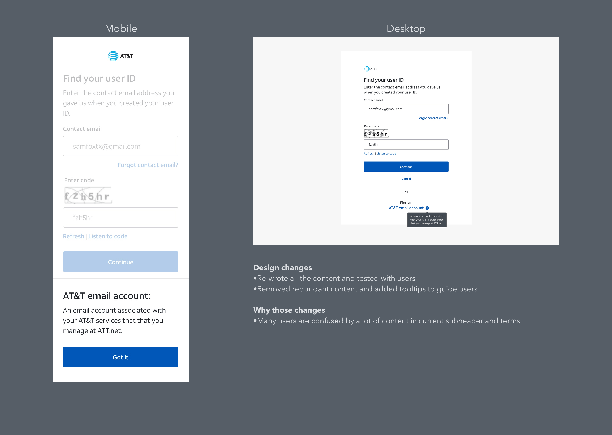
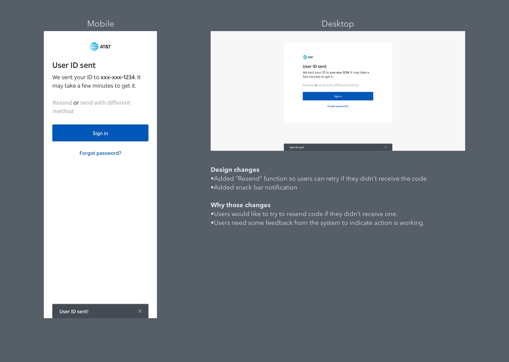
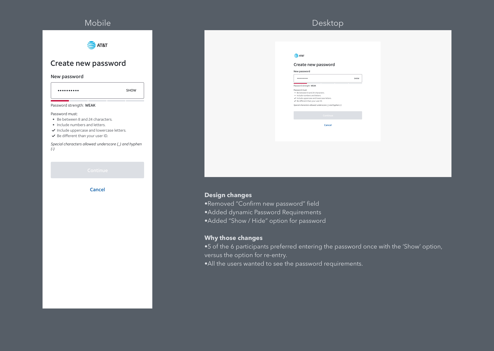
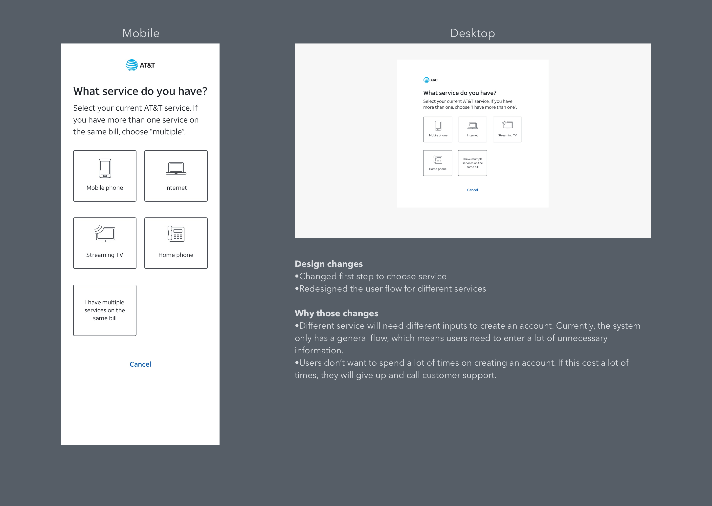
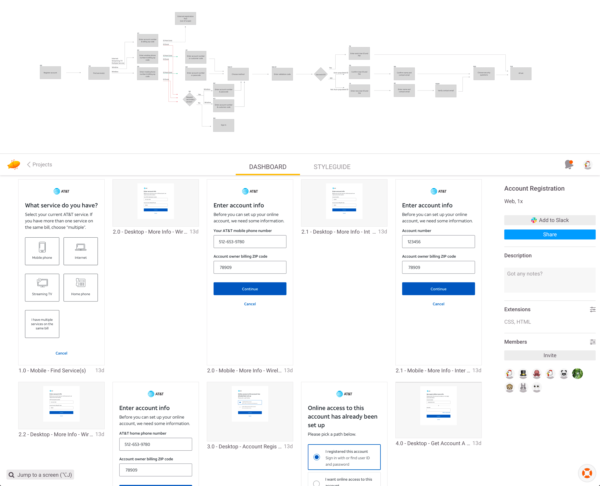

There are a huge amount of users who sign in myatt.com to manage their account. How to make sure all users can get their online access easier and faster is a key factor to AT&T customer experience. This is my first project at AT&T, I worked on the customer identity redesign phase 1 including Forgot ID/ Password and Account Registration redesign.
Roles and timeline
For the Forgot ID/ Password feature, I was the only designer in the team. For create account project, I worked with another designer in the team, we shared the responsibility. I also worked very closely with one content strategist, one researcher, one project manager and several engineers in the project. Both of the projects took 8 weeks.
Goals
Using research data to inform quick design changes in the current design.
Re-skin all the current UI to the new flat design style.
Gathering as much data as possible to prepare phase 2 design.
This project is acting as the middle stage to the final perfect and ideal single identity for all the users, which will take a long time in the future including a lot of backend and system change.
Design Changes




Designs Handoff
Design hand-off including detailed flow chart and pixel-perfect mockups.

Results
From 3 rounds of user testing tested with 18 users, we know that the new designer is better than the current one. We also like to use Adobe analytics to analysis a huge amount of users quantitively, but the data tracking in AT&T is not well set up before. So we can not use that data for now. Our team also working hard to find the right stakeholders to build all the analytics platform up, hopefully, we can use that soon.
Future improvement and thoughts
During the research and design, we figured that we probably didn’t notice a lot of edge cases were not covered in this project. The challenging part is focused on main use cases to simplified design but also make sure we don’t ignore some users they have limited resources.
A lot of design changes we proposed will need a lot of system and backend changes. Trying to balance business goals with users need is not an easy thing especially for a huge user base project.
In a big company, a lot of times project is not moving very fast is not because people are sloppy, is just because their’s a huge need for communication. Different teams have different goals and understanding of the project, they use different tools and talk very differently. Making sure all the stakeholders understanding why we design like that way and communicated more efficiency is essential for the success of the design.